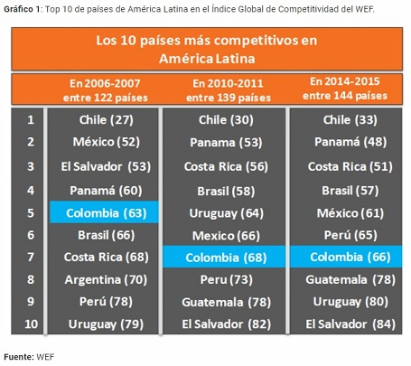

La permanencia en el mercado es un objetivo fundamental para la mayoría de las empresas y con la transformación digital de hoy la innovación es la clave. Desafortunadamente a pesar de los esfuerzos que han venido realizando el sector privado para el ecosistema de innovación e inversión por parte del Estado, Colombia esta ubicado debajo de la mitad de la tabla de acuerdo al informe del Indice Global de Innovacion (ano 2015).

Por la anterior surge la inquietud de si las empresas colombianas están concientizadas de la importancia de implementar políticas que las encaminen para ser innovadoras de esta manera se encuesto a 219 empresas de los sectores económicos manufactura, transporte, construcción, agro, salud, comercio, seguros y financiera por parte de la Andi y la Revista Dinero, lo cual arrojo las siguientes estadísticas:
El 96,8% expresaron que realizan actividades de innovación para asegurar la permanencia de sus empresas en el mercado, fomentando estrategias de preparación para la transformación digital y así mejorar proceso internos en la organización.
El 80,8% de las empresas dicen estar relacionadas con universidades, entidades publicas, proveedores, centros de investigación, asesores externos y clientes para mejorar su sistemas innovadores.
El 81,6% promueven la cultura de la innovación creando espacio para el desarrollo de nuevas ideas que se ejecuten en proyectos, implementando mecanismos de consulta.
Un 3.2% de las empresas comunicaron que no promueven la innovación ya sea porque piensan que es muy costoso, una pérdida de tiempo (cambio de paradigma), los directivos no ven la necesidad o no saben cómo hacerlo.
Quienes han visto películas de ciencia ficción en relación a la evolución humana a partir de la tecnología, vida extraterrestre e inteligencia artificial podrían preguntarse y aterrarse un poco de que es lo que aquí está empezando por ejemplo ideas tales como: si ahora el mercado laboral desplazara a miles de trabajadores con la incursión de los algoritmos o el famoso mito del desempleo técnico, pues bien ya hemos presenciado algunas crisis mundiales como la de 2008 y que ha sido superado, porque no pensar que ahora tenemos un reto para ser más digitales, establecer nuevos liderazgos e implementar un aprendizaje continuo para ser competitivos?